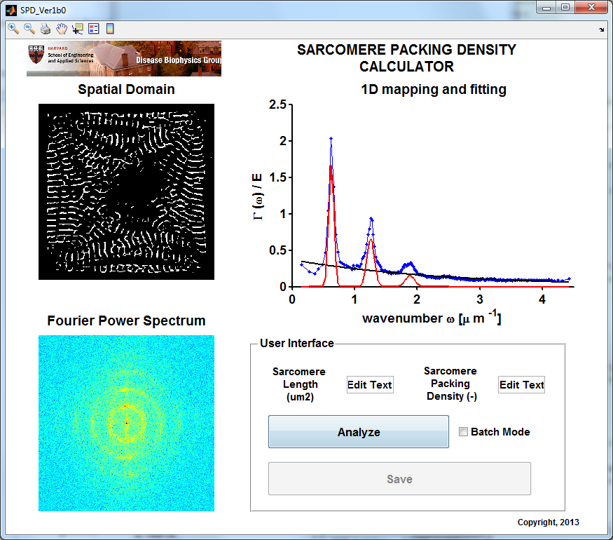

Sarcomere Packing Density (SPD) Calculator
Beta version 1.0 date: 4/26/2013
The following code is part of the development of COBRA: the Cytoskeletal Organization Benchmark and Representation Assay.
written by: Francesco S. Pasqualini
DISEASE BIOPHYSICS GROUP CONFIDENTIAL Unpublished Copyright (c) 2013, DISEASE BIOPHYSICS GROUP, All Rights Reserved.
NOTICE: All information contained herein is, and remains the property of the DISEASE BIOPHYSICS GROUP. The intellectual and technical concepts contained herein are proprietary to the DISEASE BIOPHYSICS GROUP and may be covered by U.S. and Foreign Patents, patents in process, and are protected by trade secret or copyright law. Dissemination of this information or reproduction of this material is strictly forbidden unless prior written permission is obtained from the DISEASE BIOPHYSICS GROUP. Access to the source code contained herein is hereby forbidden to anyone except current DISEASE BIOPHYSICS GROUP employees, managers or contractors who have executed Confidentiality and Non-disclosure agreements explicitly covering such access.
The copyright notice above does not evidence any actual or intended publication or disclosure of this source code, which includes information that is confidential and/or proprietary, and is a trade secret, of the DISEASE BIOPHYSICS GROUP. ANY REPRODUCTION, MODIFICATION, DISTRIBUTION, PUBLIC PERFORMANCE, OR PUBLIC DISPLAY OF OR THROUGH USE OF THIS SOURCE CODE WITHOUT THE EXPRESS WRITTEN CONSENT OF COMPANY IS STRICTLY PROHIBITED, AND IN VIOLATION OF APPLICABLE LAWS AND INTERNATIONAL TREATIES. THE RECEIPT OR POSSESSION OF THIS SOURCE CODE AND/OR RELATED INFORMATION DOES NOT CONVEY OR IMPLY ANY RIGHTS TO REPRODUCE, DISCLOSE OR DISTRIBUTE ITS CONTENTS, OR TO MANUFACTURE, USE, OR SELL ANYTHING THAT IT MAY DESCRIBE, IN WHOLE OR IN PART.
Contents
INITIALIZATION
function varargout = SPD_Ver1b0(varargin) % Begin initialization code - DO NOT EDIT gui_Singleton = 1; gui_State = struct('gui_Name', mfilename, ... 'gui_Singleton', gui_Singleton, ... 'gui_OpeningFcn', @SPD_Ver1b0_OpeningFcn, ... 'gui_OutputFcn', @SPD_Ver1b0_OutputFcn, ... 'gui_LayoutFcn', [] , ... 'gui_Callback', []); if nargin && ischar(varargin{1}) gui_State.gui_Callback = str2func(varargin{1}); end if nargout [varargout{1:nargout}] = gui_mainfcn(gui_State, varargin{:}); else gui_mainfcn(gui_State, varargin{:}); end % End initialization code - DO NOT EDIT % load dependencies restoredefaultpath [PATHSTR,NAME,EXT] = fileparts(pwd); addpath(genpath([PATHSTR,... '\Dependencies'])); % --- Executes just before SPD_Ver1b0 is made visible. function SPD_Ver1b0_OpeningFcn(hObject, eventdata, handles, varargin) % This function has no output args, see OutputFcn. % hObject handle to figure % eventdata reserved - to be defined in a future version of MATLAB % handles structure with handles and user data (see GUIDATA) % varargin command line arguments to SPD_Ver1b0 (see VARARGIN) % Choose default command line output for SPD_Ver1b0 handles.output = hObject; % handles.TotalDataset = []; handles.Dataset = []; set(handles.pushbutton1,'BackgroundColor',[240 240 240]/255,'string',... 'Analyze','enable','on'); set(handles.pushbutton2,'Enable','off') axes(handles.dBGLogo); imshow(imread('DBGHeader.PNG'),[]) % Update handles structure guidata(hObject, handles); % --- Outputs from this function are returned to the command line. function varargout = SPD_Ver1b0_OutputFcn(hObject, eventdata, handles)
% varargout cell array for returning output args (see VARARGOUT); % hObject handle to figure % eventdata reserved - to be defined in a future version of MATLAB % handles structure with handles and user data (see GUIDATA) % Get default command line output from handles structure varargout{1} = handles.output;
Warning: Duplicate directory name: C:\Program Files\MATLAB\R2012a\toolbox\shared\hdlshared.

GUI SUPPL FUNCTIONs
do not edit
% --- Executes during object creation, after setting all properties.
function edit1_CreateFcn(hObject, eventdata, handles) % hObject handle to edit1 (see GCBO) % eventdata reserved - to be defined in a future version of MATLAB % handles empty - handles not created until after all CreateFcns called % Hint: edit controls usually have a white background on Windows. % See ISPC and COMPUTER. if ispc && isequal(get(hObject,'BackgroundColor'), get(0,'defaultUicontrolBackgroundColor')) set(hObject,'BackgroundColor','white'); end % --- Executes during object creation, after setting all properties. function edit2_CreateFcn(hObject, eventdata, handles)
% hObject handle to edit2 (see GCBO) % eventdata reserved - to be defined in a future version of MATLAB % handles empty - handles not created until after all CreateFcns called % Hint: edit controls usually have a white background on Windows. % See ISPC and COMPUTER. if ispc && isequal(get(hObject,'BackgroundColor'), get(0,'defaultUicontrolBackgroundColor')) set(hObject,'BackgroundColor','white'); end
Warning: Duplicate directory name: C:\Program Files\MATLAB\R2012a\toolbox\shared\hdlshared. Warning: Duplicate directory name: C:\Program Files\MATLAB\R2012a\toolbox\shared\hdlshared.
ANALYZE BUTTON
% --- Executes on button press in pushbutton1.
function pushbutton1_Callback(hObject, eventdata, handles)
% hObject handle to pushbutton1 (see GCBO) % eventdata reserved - to be defined in a future version of MATLAB % handles structure with handles and user data (see GUIDATA) clc set(handles.pushbutton1,'BackgroundColor','r','string',... 'Analyzing','enable','off'); set(handles.pushbutton2,'Enable','off') guidata(hObject, handles); if ~isempty(handles.Dataset) handles = rmfield(handles,'Dataset'); handles = rmfield(handles,'TotalDataset'); end % Specify Pixel Size prompt = {'Pixel size:'}; dlg_title = 'Specify image resolution (um/pixel)'; num_lines = 1; def = {'0.155'}; userSelection = inputdlg(prompt,dlg_title,num_lines,def); if isempty(userSelection) set(handles.pushbutton1,'BackgroundColor',[240 240 240]/255,'string',... 'Analyze','enable','on'); return end handles.PxlSize = str2double(userSelection); guidata(hObject, handles); % Open Image or folder if get(handles.checkbox1, 'Value') ListOfFiles = SelectFolder(hObject, eventdata, handles); NumFiles = length(ListOfFiles); for idx1 = 1:NumFiles % extract filename filenames{idx1} = ListOfFiles(idx1).name; % extract parts of filename and save them in handles [PATHSTR,NAME,EXT] = fileparts(filenames{idx1}); handles.filename = NAME; handles.pathname = PATHSTR; guidata(hObject, handles); % analyze the image handles = AnalyzeSingleImage(filenames{idx1},hObject,... eventdata, handles); % gamma is used to improve the 2D visualization normGamma = @(x,gamma) ((x - min(x(:)))/(max(x(:))-min(x(:)))).^gamma; axes(handles.axes1) imshow(handles.originalImage,[]) freezeColors axes(handles.axes2) imshow(normGamma(handles.PowerSpectrum,0.1),[]) colormap jet colorbar freezeColors % visualize the values of the 2 metrics in the GUI set(handles.edit1,'String',handles.SL); set(handles.edit2,'String',handles.SPD); % update the GUI data structure guidata(hObject, handles); % assemble information in a dataset array Data = {handles.filename,... handles.SL,handles.SPD}; VariableNames = {'filename','SL','SPD'}; handles.Dataset = dataset({Data, VariableNames{:}}); % add observations to the dataset if idx1 == 1 handles.TotalDataset = handles.Dataset; else handles.TotalDataset = cat(1, handles.Dataset,... handles.TotalDataset); end % update the GUI data structure guidata(hObject, handles); end else % prompt user to select a file [PATHSTR,NAME,EXT] = fileparts(pwd); imageFolder = [PATHSTR,... '\DemoImages\SPD\pCM\*.tif']; % imageFolder = ['C:\']; [filename, pathname] = uigetfile(... imageFolder,... 'Pick a TIFF image'); if isequal(filename,0) || isequal(pathname,0) disp('User pressed cancel') set(handles.pushbutton1,'BackgroundColor',[240 240 240]/255,'string',... 'Analyze','enable','on'); return else disp(['User selected ', fullfile(pathname, filename)]) end % store filename info away handles.filename = filename; handles.pathname = pathname; guidata(hObject, handles); % analyze the image handles = AnalyzeSingleImage([pathname, filename],hObject,... eventdata, handles); normGamma = @(x,gamma) ... ((x - min(x(:)))/(max(x(:))-min(x(:)))).^gamma; % gamma is used to improve the 2D visualization axes(handles.axes1) imshow(handles.originalImage,[]) freezeColors axes(handles.axes2) imshow(normGamma(handles.PowerSpectrum,0.1),[]) colormap jet colorbar freezeColors % visualize the values of the 2 metrics in the GUI set(handles.edit1,'String',handles.SL); set(handles.edit2,'String',handles.SPD); % update the GUI data structure guidata(hObject, handles); end set(handles.pushbutton1,'BackgroundColor',[240 240 240]/255,'string',... 'Analyze','enable','on'); set(handles.pushbutton2,'enable','on'); guidata(hObject, handles);
SAVE BUTTON
% --- Executes on button press in pushbutton2.
function pushbutton2_Callback(hObject, eventdata, handles)
% hObject handle to pushbutton2 (see GCBO) % eventdata reserved - to be defined in a future version of MATLAB % handles structure with handles and user data (see GUIDATA) % if the batch mode is selected, only save the dataset array if get(handles.checkbox1, 'Value') % handles.TotalDataset = handles.TotalDataset(:,[end,1:end]); export(handles.TotalDataset,'file',... [handles.pathname, '\', 'FolderSummary.csv'],'Delimiter',',') % otherwise save the images else % take an editable snapshot of the GUI saveas(gcbf,[handles.pathname,handles.filename,'ScreenShot.eps'],'psc2') % export into a single EPS file the histogram and fitting figTemp = figure('visible','off'); newax = copyobj(handles.axes2,figTemp); saveas(figTemp,[handles.pathname,handles.filename,'_Originalimage.eps'],'psc2') close(figTemp) % export into a single EPS file the thresholded image figTemp = figure('visible','off'); newax = copyobj(handles.axes2,figTemp); saveas(figTemp,[handles.pathname,handles.filename,'_ThreshImage.eps'],'psc2') end set(handles.pushbutton2,'Enable','off') guidata(hObject, handles);
HELPER FUNCTIONS
function ListOfFiles = SelectFolder(hObject, eventdata, handles) [PATHSTR,NAME,EXT] = fileparts(pwd); imageFolder = [PATHSTR,... '\DemoImages\SPD\pCM']; % d = uigetdir(pwd); % to start from the current folder d = uigetdir(imageFolder); % to start from a folder containing demo files if isequal(d,0) || isequal(d,0) disp('User pressed cancel') set(handles.pushbutton1,'BackgroundColor',[240 240 240]/255,'string',... 'Analyze','enable','on'); return end ListOfFiles = dir(fullfile(d, '*.tif')); for idx1 = 1:length(ListOfFiles) ListOfFiles(idx1).name = [d,'\',ListOfFiles(idx1).name ]; end % perform analysis of each image function handles = AnalyzeSingleImage(filename,hObject,... eventdata, handles) handles = imageSelection(filename,hObject, eventdata, handles); handles = calculatePowerSpectrum(hObject, eventdata, handles); % 1D Mapping handles = radialIntegration(hObject, eventdata, handles); % NON-LINEAR FITTING handles = sarcPackDensityDetector(hObject, eventdata, handles); function handles = imageSelection(filename,hObject, eventdata, handles) handles.originalImage = imread(filename); function handles = calculatePowerSpectrum(hObject, eventdata, handles) im = handles.originalImage; % function [N, PxlSize, PowerSpectrum] = calc2DPowerSpectrum(im) % FFT CALCULATIONS % pad image for greater FFT speed im = padtomakepowof2(im); [ M, handles.N, ~ ] = size(im); % helper in-line function to normalize values between 0 and 1 normGamma = @(x,gamma) ((x - min(x(:)))/(max(x(:))-min(x(:)))).^gamma; % gamma is used to improve the 2D visualization % Perform 2D Fast Fouier Transform operations fftA = fft2(double(im)); % obtain the DC value (# of pixels positive for cytoskeletal protein) DCvalue = fftA(1,1); % eliminate the DC value to avoid extremely high peak at the center fftA(1,1) = 0; % shift the FFT so the DC component is in the center and the orientations % can be appreciated freqComponts = fftshift(fftA); % finally take the power of the spectrum handles.PowerSpectrum = abs(freqComponts).^2; function handles = radialIntegration(hObject, eventdata, handles) % function [waveNum, Gamma] = radialIntegration(N,PxlSize,PowerSpectrum) N = handles.N; PxlSize = handles.PxlSize; PowerSpectrum = handles.PowerSpectrum; Fs_x = 1/PxlSize; dFx = Fs_x/N; % cycles per micron Fx = (-Fs_x/2:dFx:Fs_x/2-dFx)'; % cycles per micron % transform in radial coordinates [MFx MFy] = meshgrid(Fx,Fx); [th ro] = cart2pol(MFx,MFy); % Perform 2D to 1D mapping % calculate the center of the matrix nhalf = floor(N/2); % perform radial integration of the 2D power spectru dPxl = floor(numel(ro)/nhalf); nmEL = dPxl*nhalf; % -> prepare for reshape [rProfile,idx] = sort(ro(:)); y = rProfile.*PowerSpectrum(idx); % here is where we perform G(w) * w % control for elements in the arrays that could not be reshaped rProfile(nmEL+1:end) = []; y(nmEL+1:end) = []; % extract the 1D profile (integration) ySum = sum(reshape(y,dPxl,nhalf),1)'; waveNum = mean(reshape(rProfile,dPxl,nhalf),1)'; % normalize the 1D profile so that the Area is 1 Gamma = ySum/trapz(waveNum, ySum); handles.waveNum = waveNum; handles.Gamma = Gamma; function handles = sarcPackDensityDetector(hObject, eventdata, handles)
% function [SL, sarcPackDensityEps] = sarcPackDensityDetector(waveNum, Gamma, handles); waveNum = handles.waveNum; Gamma = handles.Gamma; % Set up figure to receive data sets and fits % anonymous functions gaussianpeak = @(x,prms) prms(1)*exp(-((x-prms(2))/prms(3)).^2); expPeak = @(x,prms) prms(1)*exp(-prms(2)*x)+ prms(3); HWTM = @(x) sqrt(2*log(10))*x; axes(handles.axes3) cla h_ = line(waveNum,Gamma,'Parent',handles.axes3,'Color','b',... 'LineStyle','-', 'LineWidth',1,... 'Marker','.', 'MarkerSize',12); % PERFORM FIT
fitting equation
fitEqn = ... ['a*exp(-b*x)+',... 'a1*exp(-((x-b0)/c1)^2)+',... 'a2*exp(-((x-2*b0)/c2)^2)+',... 'a3*exp(-((x-3*b0)/c3)^2)+',... '+d'];
fitting range: lower limits
lowerLimits = ... [0,... % a 0,0,0,... % a1-3 0,... % b .4,... %b0 0,0,0,... % c1-5 0];% d
fitting range: upper limits
upperLimits = ... [0.5,... % a 10,10,10,... % a1-3 100,... % b 0.7,... %b0 0.15,0.15,0.15,... % c1-5 1];% d
fitting range: Starting points
startingPoints = ... [.2,... % a 1,0.5,0.1,... % a1-3 0,... % b 0.57,... %b0 0.05,0.05,0.05,... % c1-5 0]; % d fo_ = fitoptions('method','NonlinearLeastSquares',... 'Lower',lowerLimits,... 'Upper',upperLimits);% d % a b ok_ = isfinite(waveNum) & isfinite(Gamma); if ~all( ok_ ) warning( 'GenerateMFile:IgnoringNansAndInfs',... 'Ignoring NaNs and Infs in data.' ); end set(fo_,'Startpoint',startingPoints); ft_ = fittype(fitEqn,... 'dependent',{'y'},'independent',{'x'},... 'coefficients',{'a', 'a1', 'a2', 'a3', 'b', 'b0',... 'c1', 'c2', 'c3', 'd'}); % Fit this model using new data [cf gof_] = fit(waveNum(ok_),Gamma(ok_),ft_,fo_); vp = [coeffvalues(cf)]; ParametersForPeak(1,:) = vp([2,6,7]); ParametersForPeak(2,:) = vp([3,6,8]); ParametersForPeak(2,2) = 2*ParametersForPeak(1,2); ParametersForPeak(3,:) = vp([4,6,9]); ParametersForPeak(3,2) = 3*ParametersForPeak(1,2); ParametersForExp = vp([1 5 10]); axes(handles.axes3) hold on plot(waveNum,expPeak(waveNum,ParametersForExp),'k','LineWidth',2) plot(waveNum,gaussianpeak(waveNum,ParametersForPeak(1,:))+... gaussianpeak(waveNum,ParametersForPeak(2,:))+... gaussianpeak(waveNum,ParametersForPeak(3,:)),'r','LineWidth',2) hold off set(handles.axes3,'box','off','TickDir','out'); % ,'FontSize',14,'FontWeight','bold') % ylim('auto'); legend({'data','aperiodic','periodic'},'EdgeColor','white') xlabel('wavenumber \omega [\mu m ^{-1}]') ylabel('\Gamma (\omega) / E') axes(handles.axes3) legend({'data','aperiodic','periodic'},'EdgeColor','white') SL = 1/ParametersForPeak(1,2); flagPeak2 = ParametersForPeak(1,2) + HWTM(ParametersForPeak(1,3)) <=... ParametersForPeak(2,2)-HWTM(ParametersForPeak(2,3)); flagPeak3 = ParametersForPeak(2,2) + HWTM(ParametersForPeak(2,3)) <=... ParametersForPeak(3,2)-HWTM(ParametersForPeak(3,3)); sarcPackDensityEps = trapz(waveNum,... gaussianpeak(waveNum,ParametersForPeak(1,:))) +... flagPeak2*trapz(waveNum,... gaussianpeak(waveNum,ParametersForPeak(2,:))) +... flagPeak2*flagPeak3*trapz(waveNum,... gaussianpeak(waveNum,ParametersForPeak(3,:))); handles.SL = SL; handles.SPD = sarcPackDensityEps;
function A = padtomakepowof2(A,varargin) % % % Default Values padvalue=0; defaultValues = {padvalue}; % % % Assign Values nonemptyIdx = ~cellfun('isempty',varargin); defaultValues(nonemptyIdx) = varargin(nonemptyIdx); [padvalue] = deal(defaultValues{:}); % % ------------------------------------ B=A; [M,N]=size(B); type_A=class(A); A=converttoclass(A,'double'); padvalue=converttoclass(padvalue,'double'); npo2=2^nextpow2(max(size(A))); % % ------------------------------------ % % Padding process A(1:npo2,1:npo2)=padvalue; % A expanded to required size A(1:M,1:N)=B(1:M,1:N); % 1:M,1:N locations filled with origincal values % % OR % % alternatively A can be padded using image processing tool % % box method 'padarray' by following statement % % A=padarray(A,[npo2-M,npo2-N],padvalue,'post'); % % ------------------------------------ A=converttoclass(A,type_A); % back to original type